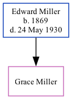

Grace E Miller c1912 -
[ Home ] | [ Surnames Index ] | [ Family History ]The child of Edward Miller, was born in Colorado1. In 1920, she was living in South Berthoud, Larimer, Colorado1.
Parents
- Edward M was born in 1869
Citations
- 1920 United States Federal Census Ancestry.com Operations Inc (Age: 8; Marital Status: Single; Relation to Head of House: Daughter)
Family Tree
Data (GEDCOM) maintained by Jay Weston Hannah, Omaha, Nebraska, USA.
Website generated by ged2site. Last updated on Jun 18, 2024.